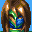 Trust me, that's not a good idea, you'll only be forced to remove it or something.
 What the heck is this?!
What the heck is this?!
 Its for your rabid fans who want to see you as often as possible when playing
Golden Sun: The Lost Age. You're pretty darn easy to miss sometimes.
Its for your rabid fans who want to see you as often as possible when playing
Golden Sun: The Lost Age. You're pretty darn easy to miss sometimes.
 So? I like being that way... and who's been supplying the inside information?
So? I like being that way... and who's been supplying the inside information?
 Kraden, Felix, Jenna, Sheba and Picard of course.
Kraden, Felix, Jenna, Sheba and Picard of course.
 GAH! How DO they find me? I'm not safe! I'd better go and buy a disguise or
something!
GAH! How DO they find me? I'm not safe! I'd better go and buy a disguise or
something!
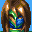
Trust me, that's not a good idea, you'll only be forced to remove it or
something.
 And what are you trying to imply, Felix?
And what are you trying to imply, Felix?
 You're jerks sometimes?
You're jerks sometimes?
 You darn well had to remove that mask and you know it!
You darn well had to remove that mask and you know it!
 Stop spying on me!
Stop spying on me!
 I also know you were thinking about Mia in the Jupiter Lighthouse!
I also know you were thinking about Mia in the Jupiter Lighthouse!
 Dratted Jupiter Adepts!
Dratted Jupiter Adepts!
 Cant get a moment's break when there's a Jupiter Adept around, huh?
Cant get a moment's break when there's a Jupiter Adept around, huh?
| 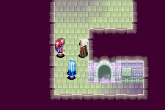 |
Alex- Venus Lighthouse, travels with you for a little way but you don't play as him or anything, just Jenna. |
| 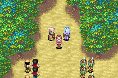 | Jenna, Alex and Kraden encounter guards outside Venus Lighthouse. Alex
scares some of them off and chases the rest of them off the screen, leaving
Jenna and Kraden to go onto Idejima alone.
|
| 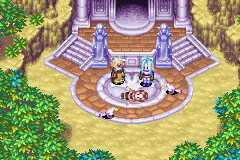 | Outside Venus Lighthouse, only if you let Jenna lose the battles. Alex heals her! Then he walks off again... |
| 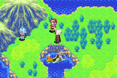 | Shortly after you reach Idejima, Alex turns up and stays for the majority of your time on Idejima, but then he vanishes after the tsunami hits... |
| 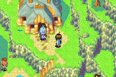 | When you reach Daila, Alex is not immediately there, but after you save the boys trapped in the Sea God Shrine place, return and try going into this house, and Alex pops out. He claims not to like travelling with others and then runs off. |
| 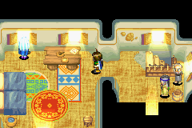 | After helping the people of Madra, get to Alhafra, check out the top room of the inn, Alex is hiding here! He doesn't run off or anything either. You can't mind-read him, but after you defeat the pirates on the ship, return and he'll still be here, THEN you can read his mind ;) |
| 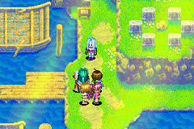 | When you go to Champa, take a look around (It's the village all by itself near a bay, with a tower to the east, north of Alhafra and only accessible with the ship) When you try to leave, Alex turns up! Then Agatio and Karst appear. Alex is travelling with them! Then all three of them run off. Phew, we don't have to fight them. And Jenna and Sheba get so mad! |
| 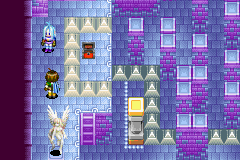 | Alex turns up in Jupiter Lighthouse, and conveniently blocks you from getting to the Lighthouse Aerie- you're not meant to be going there, you're meant to be helping Isaac and company! He heals your entire party- yay, Alex! You can mind-read him too, hehe. |
| 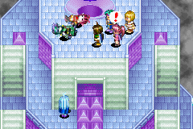 | After the battle with Agatio and Karst on the Lighthouse Aerie, Alex turns up. If you defeated Agatio and Karst, they are lying on the floor in pain and Alex sadly heals them, then all three of them run off. If Agatio and Karst defeat you (shame on you!) then Felix and company are lying on the floor and Alex, Agatio and Karst run off without helping them. Don't worry, Mia heals them. |
| 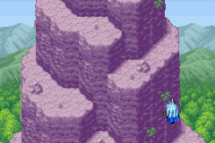 | In the ending of The Lost Age. Alex forgets how to warp. |
| 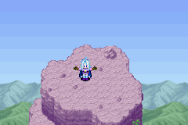 | Alex's grand plan to seize Alchemy and take over the world... before getting owned by a rock. |